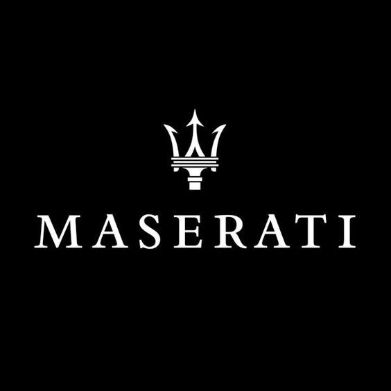
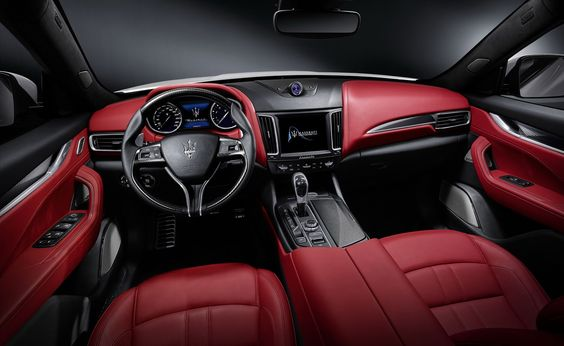
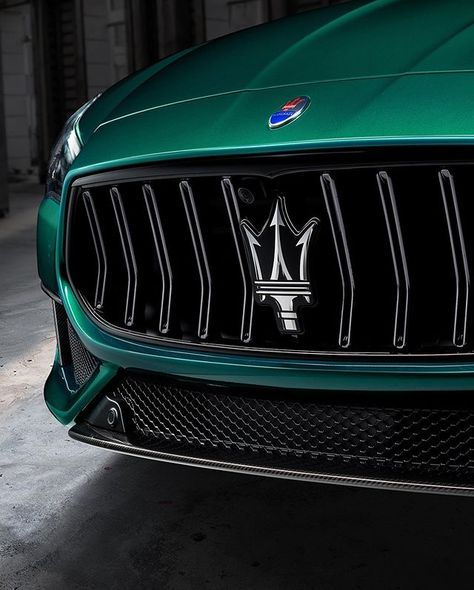
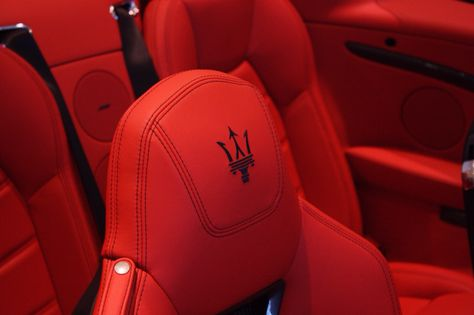

-
Nuestros coches
Mclaren Bugatti Maserati Bentley
- Seguros
- Sobre nosotros
- Contacto

Maserati Quattroporte130.000€
   Consumo Aceleración Potencia Velocidad máxima 11-12 l/100km De 0 a 100km/h en 4,5s 580 CV 326 km/h
Información adicional:El Maserati Quattroporte es una berlina de lujo, de corte deportivo, fabricada por Maserati desde 1963. Actualmente se comercializa la sexta generación, presentada en 2013 y actualizada en 2016 a nivel técnico y estético. El Maserati Quattroporte se caracteriza por su diseño pasional e italiano, además de un elevado nivel de deportividad, gracias a su potente motor. Se fabrica en la planta de Maserati en Grugliasco, Italia.
Entre las berlinas deportivas que aspiran a rivalizar con el Maserati Quattroporte nos encontramos con otros modelos como el Porsche Panamera, el Mercedes-AMG GT 4 puertas o el BMW Serie 7. El Quattroporte no es la única berlina de la marca: el Maserati Ghibli ocupa el peldaño inferior en la gama del fabricante. 
Maserati MC20275.000€
Consumo Aceleración Potencia Velocidad máxima 15 l/100km De 0 a 100km/h en 2,8s 630 CV 225 km/h
Información adicional:El Maserati MC20 es un superdeportivo fabricado por Maserati desde 2020. Actualmente se comercializa la primera generación de este modelo, presentada en 2020, y que busca suceder al Maserati MC12. El MC20 se caracteriza por ofrecer un planteamiento muy deportivo, con un diseño único en la historia del fabricante y con un chasis y propulsor desarrollados de forma específica. El MC20 se fabrica en la planta que posee Maserati en Módena, Italia, su sede central.
Entre los modelos que aspiran a rivalizar con el Maserati MC20 nos encontramos con otros superdeportivos de su clase, entre los que destacan los Lamborghini Huracán EVO, Audi R8 y McLaren GT. Sin embargo, a este nivel de prestaciones también podemos considerar otros coches como el Porsche 911 Turbo. 
Maserati MC20 Cielo300.000€
Consumo Aceleración Potencia Velocidad máxima 16 l/100km De 0 a 100km/h en 2,8s 630 CV 350 km/h
Información adicional:El MC20 Cielo es la variante descapotable del Maserati MC20, un deportivo de motor central y tracción trasera que tiene un motor de 630 CV. Está a la venta por 300 500 euros, que son 35 112 más que la versión de techo cerrado. Es un precio superior al de un Lamborghini Huracán Evo Spyder o un Porsche 911 Turbo S Cabriolet.
El techo es de cristal, de transparencia variable. Puede pasar de ser un cristal normal —a través del cual ver el cielo— a uno traslúcido (Maserati dice que opaco). La tecnología que lo permite es una lámina de cristal líquido de polímero disperso (CLPD); al aplicar una corriente eléctrica, los cristales líquidos pasan de estar desordenados (y no dejar ver lo que hay al otro lado) a mantener una misma orientación (permitir la visión). Este cristal también puede recogerse automáticamente en un espacio tras los asientos, maniobra que requiere de 12 segundos.